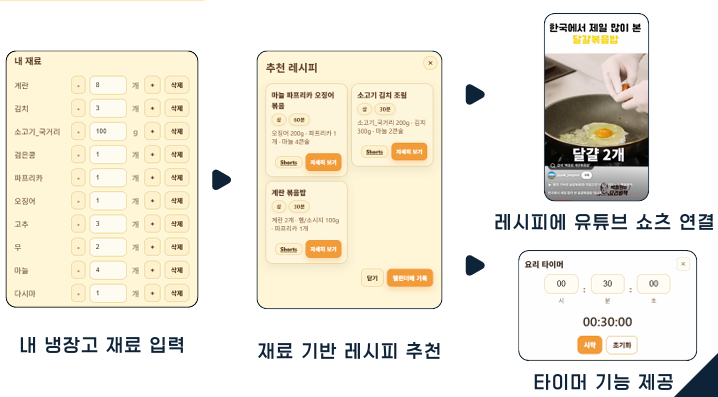
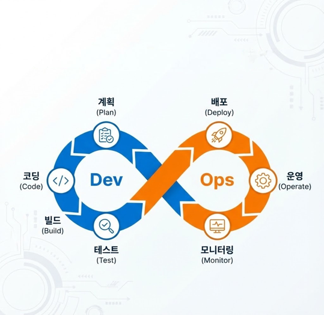
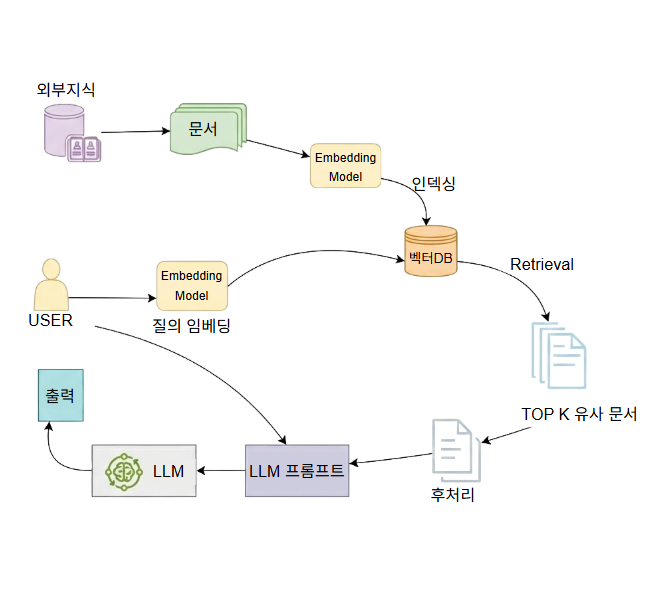
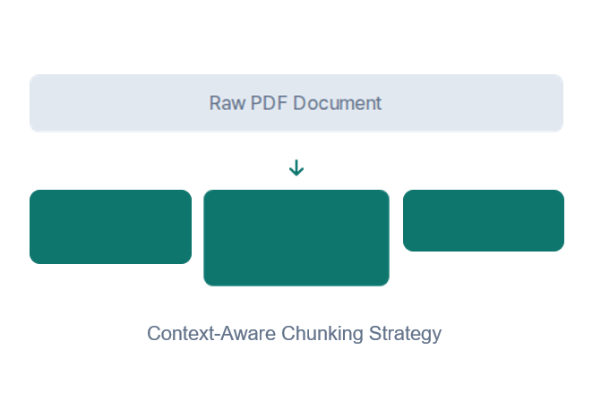
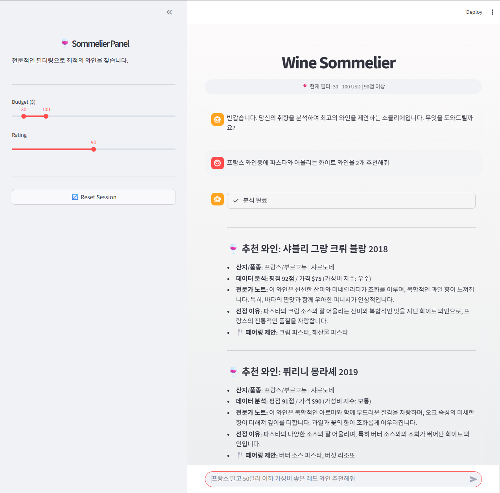
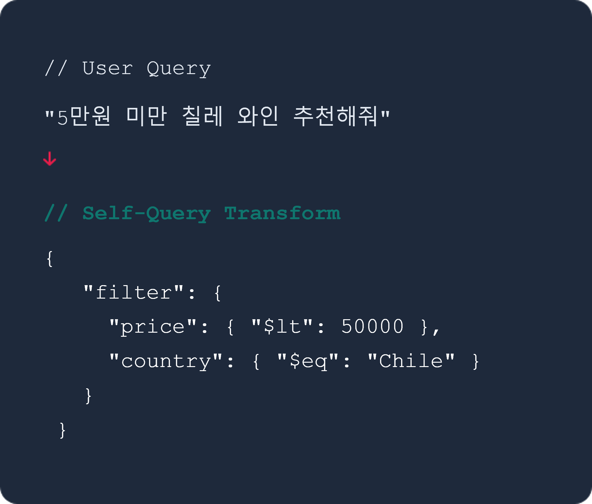
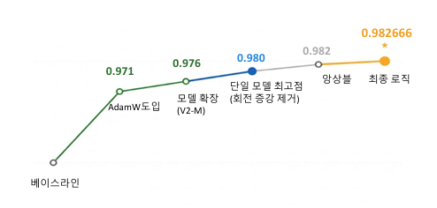
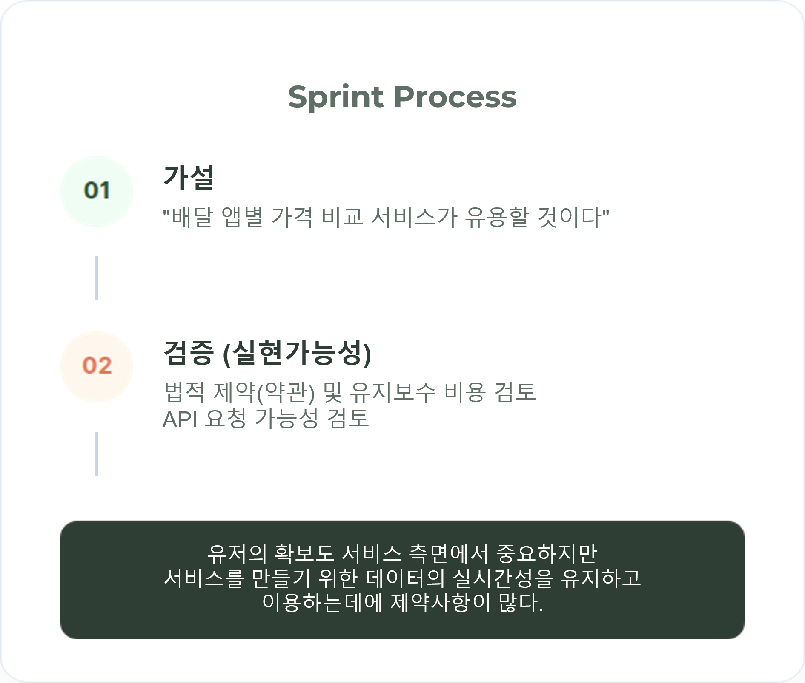

Selected Engineering
Works & Experiments.
핵심 프로젝트 컬렉션입니다.
COOKUS
Frontend Lead & DevOps Optimization
Why this Project?
냉장고 속 재료를 유용한 레시피로 연결하는 일상의 문제를 기술로 해결하고 싶었습니다. 무엇보다 배포 파이프라인 전체를 직접 설계하고 최적화하며 엔지니어링 오너십을 실현하는 것이 핵심 목표였습니다.
01. Architecture
RAG 방식의 높은 연산 비용 문제를 해결하기 위해 Filtering + Context Injection 아키텍처를 설계했습니다. 시스템 부하는 감소시키고 응답 정확도는 유지하는 효율적 구조를 구현했습니다.
02. DevOps
Docker 컨테이너화와 GitHub Actions 기반 CI/CD를 구축하여 배포 프로세스를 완전 자동화했습니다. 수동 배포 대비 시간은 20분→3분(85% 단축), 휴먼 에러는 0건으로 감소했습니다.
Engineering Stack
Tooktook
AI Researcher & Architect
Why this Project?
정책은 매달 바뀌지만 상담사는 개정 내용을 따라잡지 못합니다. 이 정보 격차를 해소하기 위해 최신 데이터를 자동으로 답변에 반영하는 RAG 시스템 구축에 도전했습니다.
01. Architect
Fine-tuning의 재학습 비용 문제를 해결하기 위해 RAG 아키텍처를 제안하고 전체 시스템 설계를 주도했습니다. 정책 업데이트 시 재학습 없이 벡터 DB만 갱신하여 운영 비용의 절감 가능성을 배웠습니다.
02. Engineering
단순 길이 기반 청킹 대신 문단·헤더 구조를 파악하는 Context-Aware Chunking을 설계했습니다.
Engineering Stack
Wine Sommelier
Intelligent Agent RAG Development
Why this Project?
"달지 않은 와인 추천해줘" 같은 모호한 자연어를 정확한 데이터 쿼리로 변환하는 과정에 매력을 느꼈습니다. 사용자의 추상적 취향을 구조화된 검색 로직으로 해석하는 기술적 도전이었습니다.
01. Data Engineering
72,000건의 리뷰에서 NLP로 맛 키워드를 추출하고 평점 88점 이상 데이터만 선별했습니다. 데이터 품질 관리를 통해 추천 정확도의 신뢰도를 확보했습니다.
02. Logic Solving
벡터 유사도만으로는 "당도 15 이하" 같은 정확한 조건을 표현할 수 없었습니다. Self-Querying Retriever로 자연어를 메타데이터 필터로 자동 변환하여 오검색률을 감소시켰습니다.
Engineering Stack
Apple Disease AI
최우수상Deep Learning & Computer Vision Modeling
Why this Project?
노이즈 많은 현장 데이터에서 미세한 병변까지 탐지하는 것이 목표였습니다. 단일 모델의 한계를 앙상블과 커스텀 로직으로 돌파하여 실제 농가에 투입 가능한 수준의 AI를 만들고자 했습니다.
01. Analysis
데이터 증강 전략과 모델 스케일 최적화로 정확도 0.982를 달성했습니다. 단일 모델 한계를 넘어서는 성능을 확보했습니다.
02. Innovation
3개 모델 앙상블에 독자적 Revival Logic을 추가했습니다. 리더 모델이 놓친 병변을 고해상도 모델이 재검증하는 2단계 구조로 False Negative를 35% 감소시켰습니다.

Engineering Stack
DeliData
Design Sprint & Feasibility Test
Why this Project?
"검증 없는 개발은 도박이다." 코딩 전에 아이디어의 실현 가능성을 먼저 테스트하는 태도를 배웠습니다. 기술적·법적 제약을 조기에 파악해 프로젝트 지속 가능성을 판단하는 과정이었습니다.
01. Validation
Design Sprint로 배달 플랫폼별 API 약관과 실시간 크롤링 가능성을 3일간 검증했습니다. 법적 리스크와 데이터 유지 비용을 조기에 파악하여 프로젝트 방향을 조정했습니다.
02. Learning
Fail Fast, Learn Faster. API 제약과 데이터 저장 비용 문제를 확인하고 프로젝트를 중단했습니다. 기술적 타당성 검증 프로세스의 중요성을 체득한 경험이었습니다.
Engineering Stack